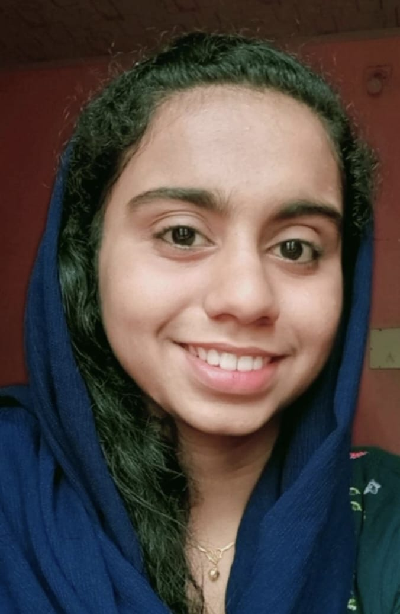

Hi,I am Fousiya
Download resume
About Me
Hello,I'm Fousiya N,a passionate and driven individual persuing my Btech degree in Computer Science from College of engineering,Perumon.With a multifaceted profile as a teacher,writer,developer,youtuber,and freelancer.I thrive on challenges and innovation.Known for my strong work ethic,self-motivation and confidence,I've honed my skills in managing events and sessions.
my goals are two-fold: in the short-term,I aim to secure a software engineering role in a reputable company, leveraging technology to drive impact.In the long term, I'm commmited to serving the public through civil service, driven by a desire to make a meaningful difference
I'm fueled by a passion for technology ,continuous learning and innovation,always seeking opportunities to grow and evolve.
My Projects
A simple Web based calculator built using html,css and Javascript for basic arithmetic operations
A fully designed front-end Website for an online tutoring Platform aimed at personalized Student learning
Skills
HTML
CSS
Javascript
Writing
Teaching
Web development
Canva
Powerpoint
C programming
Python
Youtuber
Blogger
Leadership
Team work
former NCC Cadet
LaTex
Achievements
- State level Story writing competition Winner
- Successfully co-ordinated a track on international paper presentation and organized first Online Alumni talk for our college students
- Recognized as a consistent performer in academic and extracurricular activities
- Certified participation in workshop and tech events
- Delivered public speeches and served as an anchor at several school and library events
- Acquired prizes for multiple items in District level Library Council competitions
- achieved 2nd prize in Ideaquest,the best idea creating competition
- Completed multiple front-end projects includong tutoring website
- Teaching students ranging from KG to 10th standard across various subjects via both online and offline
- Attended a 7-day internship in Data Science and Machine Learning at Techmaghi,Kerala Startup Mission